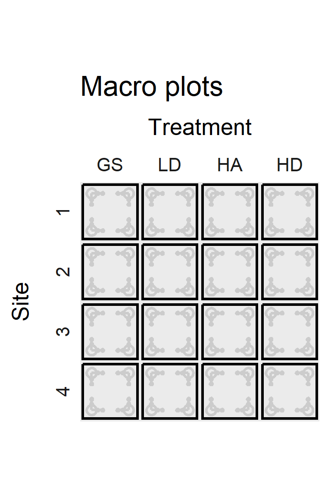
Regeneration and Fuel Loading with Varying Overstory Retention in Redwood Stands 10 Years after Transformation to Multiaged Management
Thesis defense presentation by Judson Fisher
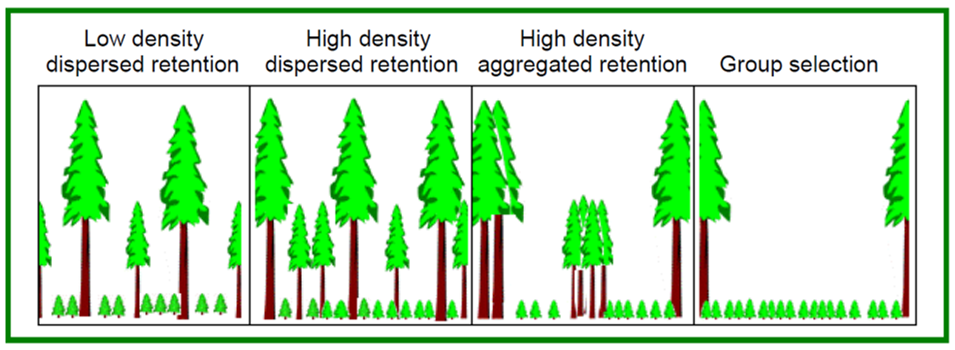
A multiaged silviculture experiment
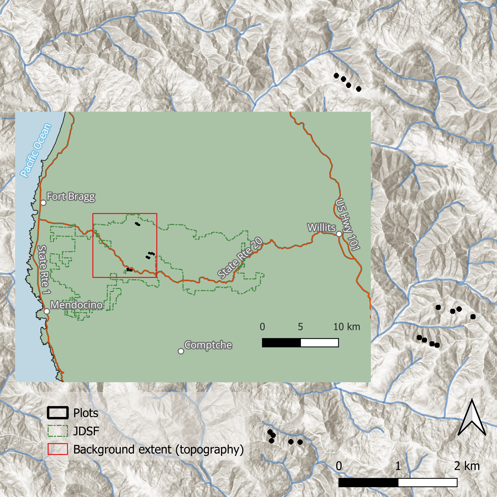
An important approach to ecological forest management
- Diversity of silvicultural techniques → Diversity of forest structures
- Growing interest in transformation to multiaged management
- This work contributes to our understanding of multiaged stand development
- First replicated multiaged redwood experiment in the redwood region
Suitability of redwood forests
- Timber value
- Shade tolerance
- Reliable regeneration
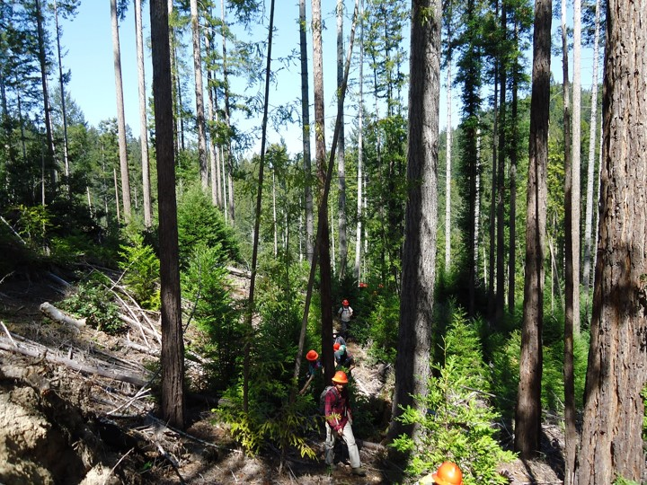
Fire-informed management
- Slow adoption of fire-informed management on the North Coast
- Redwood is a fire-adapted species
- Historical record shows frequent fire
- We need to understand the pyrosilvicultural significance of our management.
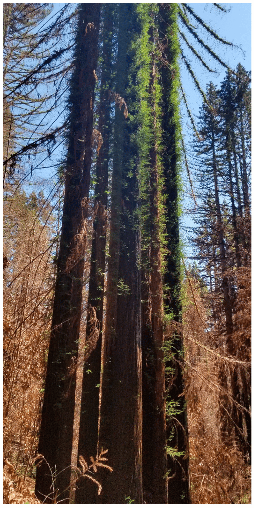
Methods — implementation
Initial harvest — 2012
- 16 two-hectare blocks, each with one 1/5-ha macro plot
- GS: Group selection
- LD: Low density dispersed
- HA: High density aggregated
- HD: High density dispersed
These four treatments were replicated across four sites.
The treatments are defined in terms of retained trees after harvest
13% RD 21% RD 21% RD 0% RD
One site
GS
LD
HA
HD
Pre-commercial thinning (PCT)
tending the understory of the rapidly growing sprouts.


Methods — sampling procedure
The plot structure
- Macro plot (Outline)
- Regeneration plots (green circles)
- Fuel transects (orange lines)
- Fuel sampling cylinders (orange circles)
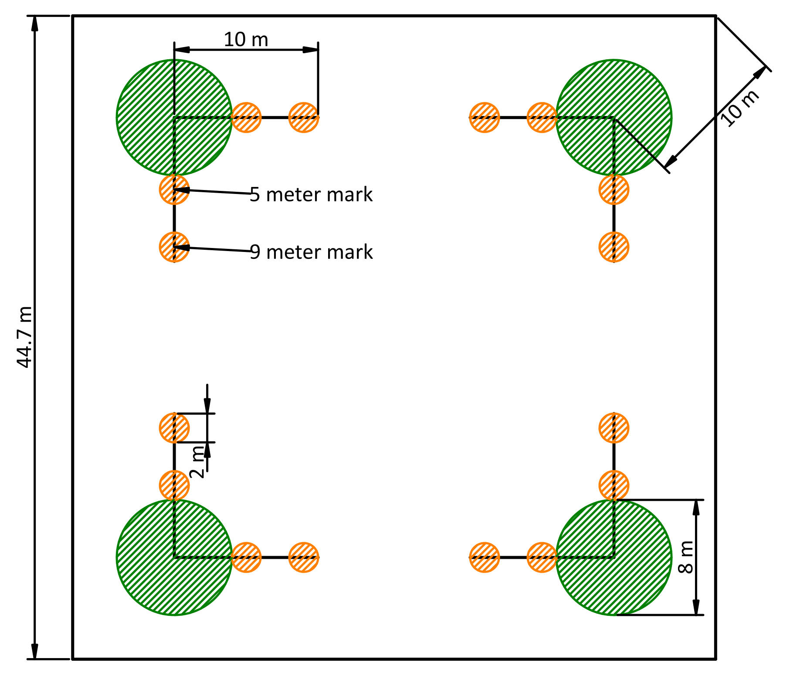
Regeneration density and composition
- Four 4-m-radius sub plots per macro plot
- recorded diameter and species of all sprouts and seedlings taller than 1.4 m
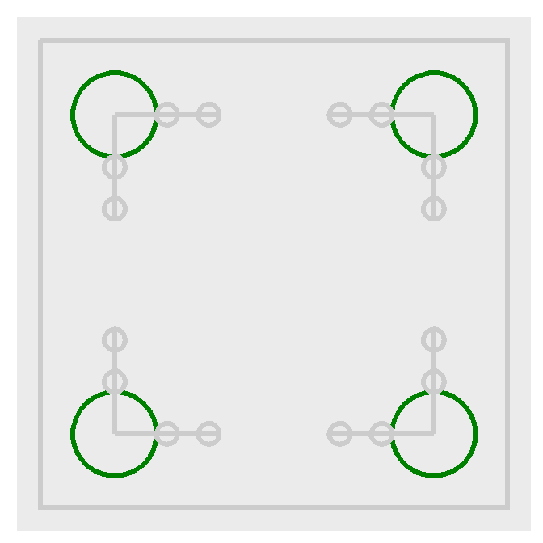
Sprout height
- 1/5 ha square macro plot
- 25 each of tanoak and redwood sprout clumps were selected for measurement
- Tallest sprout in clump measured at years 1, 5, and 10

Vegetation fuels
- We estimated percent cover and average height for:
- grass and forbs
- shrubs and trees
- Converted to load using a constant bulk density
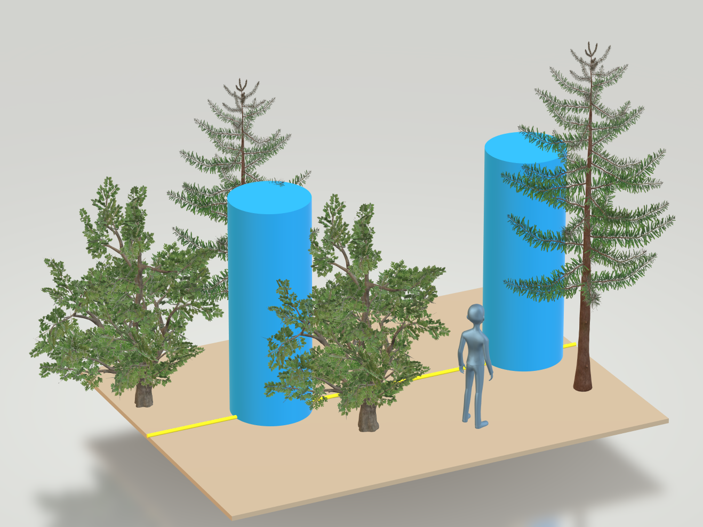
Downed woody fuel
- Particles were tallied by size class
- Counts were converted to load (Mg/ha) using linear intersect theory and parameters from the literature

Litter and duff
- Litter and duff depth measured from a representative location within the sampling cylinder
- Depth-to-load equation taken from the literature

Sampling review
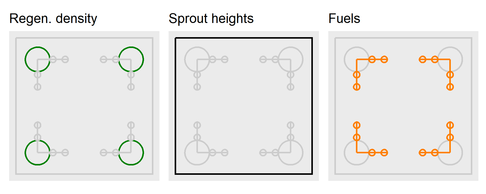
Methods — Analysis
Analytical framework
- 16 models across three response categories
- Multilevel (mixed-effects) models throughout
- Treatment and species as primary fixed effects
- Random effects reflect study design hierarchy + impact
- Models fit with R package
glmmTMB= flexibility - Distribution and variance structure selected using AIC + residual diagnostics in
DHARMa - Inference based on population-level marginal means with
marginaleffectsandemmeans
Regeneration analysis
- Basal area (m2 ha-1) used to quantify species abundance
- Reflects growth + survival under self-thinning
- Zero-inflated right-skewed data → hurdle gamma model
ba_ha ~ treat * spp + (1 | site:spp)- Dispersion varied by species
- Douglas-fir seedlings analyzed as counts
- Overdispersed counts → negative binomial model
n ~ treat + (1 | site) + (1 | site:treat)
Sprout height analysis
- Two responses:
- Height increment (yrs 1–5, 5–10)
ht_inc ~ treat * spp + year * spp + (1 | tree) + (0 + spp | plot)- Total height at year 10
ht ~ treat * spp + (0 + spp | plot) + (1 | site)
- Height increment (yrs 1–5, 5–10)
- Normal distribution mixed-effects models
- Dispersion modeled as a function of predictors
Fuels analysis
- Fuel load (Mg ha-1) estimated by standard planar intercept methods
- Classes: 1–, 10-, 100-, and 1,000-hr, duff/litter, vegetation
- Pre- and post-PCT fuel loads modeled separately
- Zero-inflated continuous data → hurdle gamma mixed models
fuel_load ~ treat + (1 | site/macro/corner)
Results — regeneration
Regeneration density
No statistically supported treatment differences
Redwood basal area declined sharply with increasing retention
- GS highest → HD lowest (~50% reduction per step)
Tanoak response more modest and less variable
Greater uncertainty in redwood responses
Douglas-fir regeneration low (~400 seedlings ha⁻¹) and similar across treatments
Regeneration takeaways
Openness most strongly favored redwood
High retention treatments reduced redwood advantage
Trends consistent with shade tolerance theory
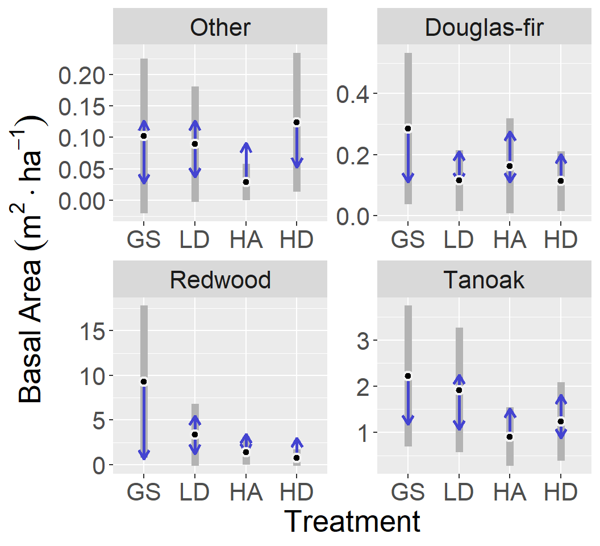
Results — sprout height
Sprout height — year 10
Strong treatment effect on final height
GS > HA & HD
Redwood consistently taller than tanoak
Openness drives rapid early development
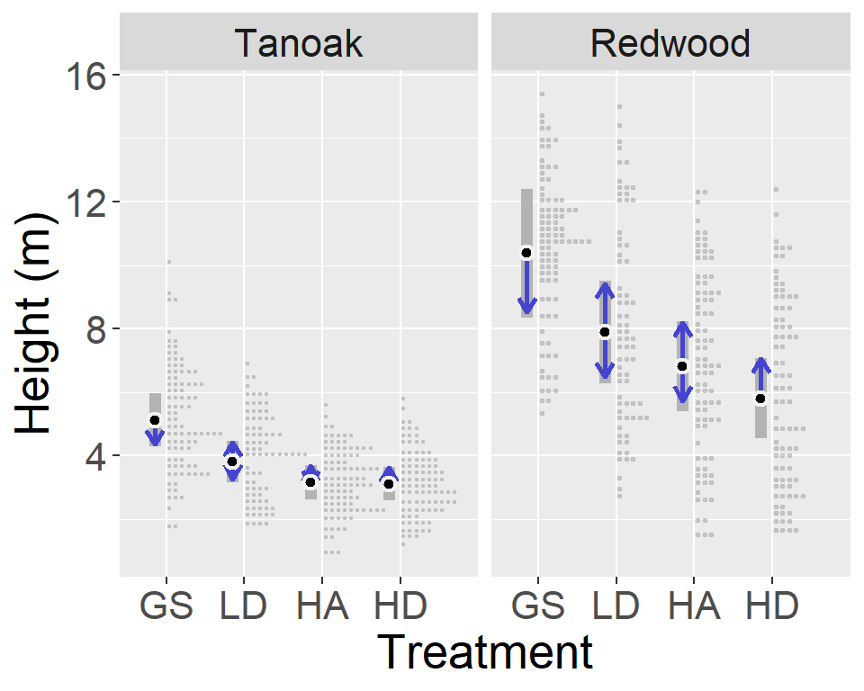
Sprout height — dynamics
Redwood grew faster than tanoak
Growth declined over time for both species
Redwood slowed more than tanoak
Strong early response to openness
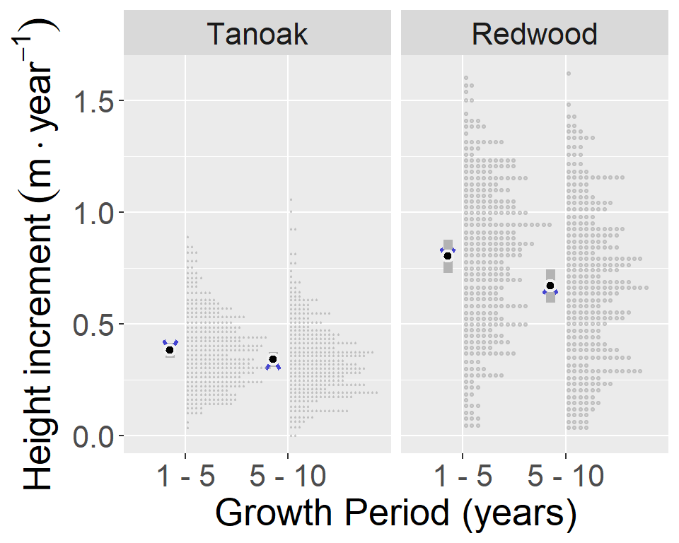
Sprout height takeaways
Canopy openness strongly controls sprout growth
Redwood maintains clear growth advantage
High retention reduces growth but not dominance
Reinforces regeneration patterns
Results — fuel
Fuels — pre-PCT

- Fuel loads broadly similar across treatments
- Fine fuels showed minor differences
- Vegetation fuels highest in open treatments
Fuels — post-PCT
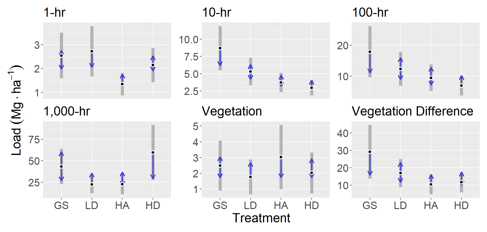
Fine dead fuels increased after thinning
Stronger differences among treatments
Highest loads in GS and LD treatments
Fuels takeaways
Pre-PCT: minimal dead surface fuels differences among treatments
Post-PCT: increased fine dead fuels
Open treatments → more growth → more slash
Trade-off between growth and fuel accumulation
Conclusions
Conclusions & implications
Canopy openness strongly drives sprout growth and development
Redwood responds most strongly; tanoak more shade tolerant
High retention reduces redwood advantage
Treatments that promote growth also increase ladder fuels before thinning and fine dead fuel loads after thinning
Multiaged management requires balancing regeneration and fuel hazard
Future directions
- Incorporate light and microclimate measurements (especially aspect)
- Improve estimation of vegetation fuel loads
- Evaluate fire behavior implications directly
- Integrate Indigenous fire stewardship perspectives
Questions?
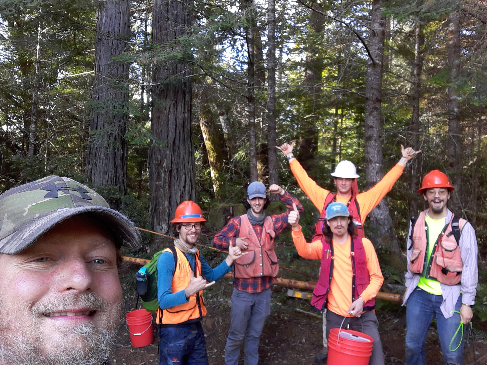
Hurdle gamma distribution
- A continuous right-skewed distribution that allows zeros
- used in basal area and fuels models.
\[ f(y_i \mid \pi_i, \mu_i, \phi_i) = \begin{cases} 1-\pi_i & \text{if } y_i = 0 \\ \pi_i \cdot \text{Gamma}(y_i \mid \mu_i, \phi_i) & \text{if } y_i > 0 \end{cases} \]
The future
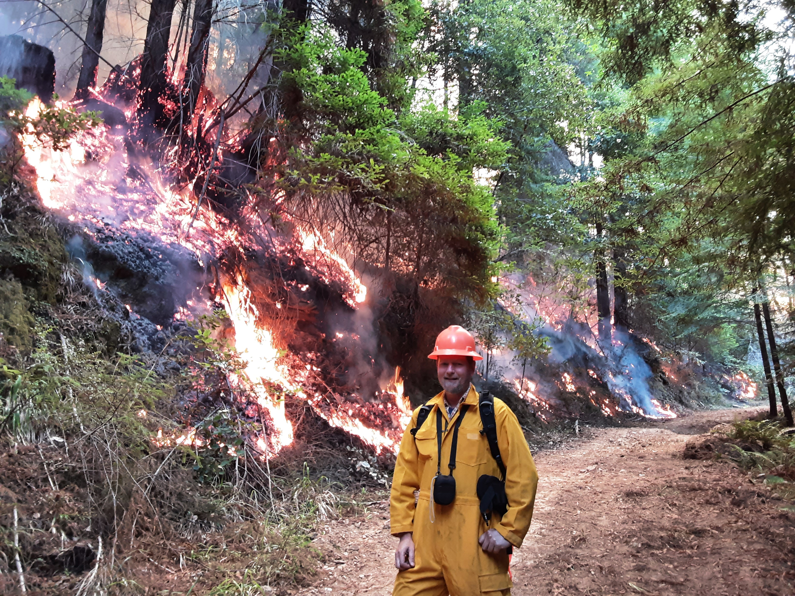
No prep burn